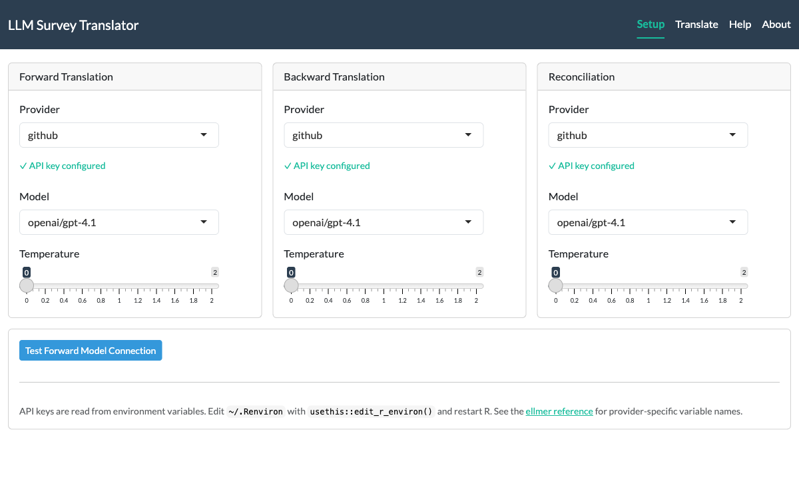
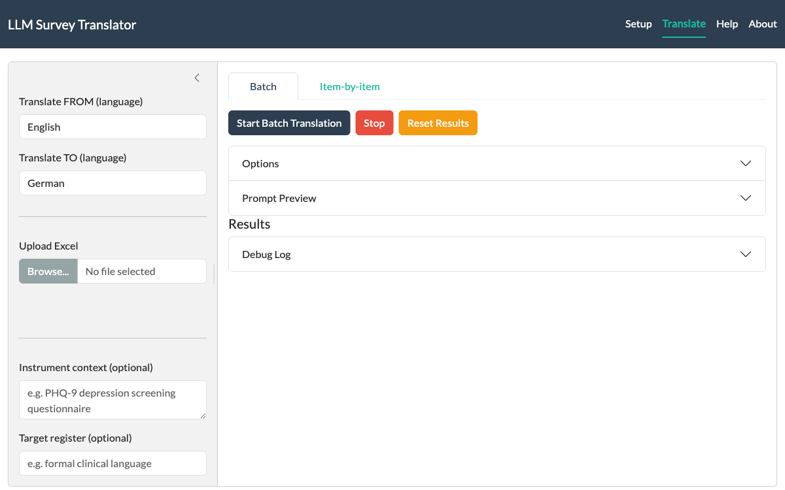
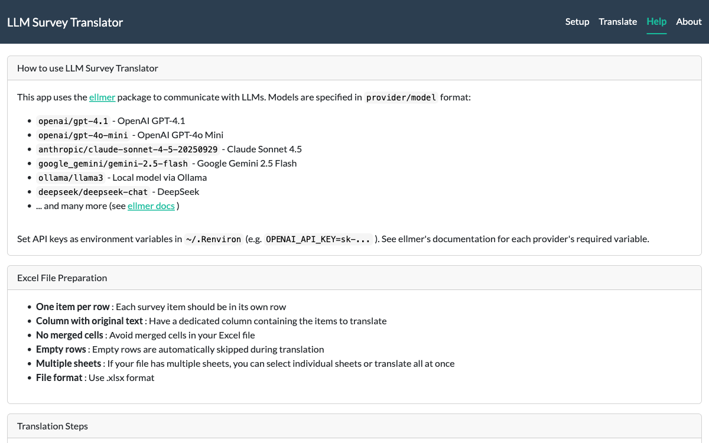

LLMTranslate::run_app()Translating surveys with LLMTranslate
You have a validated questionnaire in English. You need it in Norwegian, German, and Mandarin by next month. The traditional route — two independent translators per language, a reconciliation panel, weeks of scheduling — is thorough, but it grinds.
LLMTranslate automates the heavy lifting of that process. It follows the same TRAPD/ISPOR framework that translation panels use — forward translation, blind back-translation, and reconciliation with severity ratings (see Harkness et al., 2010; Wild et al., 2005). The difference is that the “panel” is an LLM, and a full three-stage pipeline finishes in minutes rather than weeks.
This is not a replacement for human review. It is a first draft that arrives structured, consistent, and ready for expert scrutiny — instead of a blank page.
Setting up your LLM provider
LLMTranslate talks to LLMs through the ellmer package. That means any provider ellmer supports — OpenAI, Anthropic Claude, Google Gemini, Azure, Ollama, DeepSeek, Groq, Mistral, and others — works here without extra configuration.
The one thing you need: an API key (unless using local Ollama), stored as an environment variable. Edit your ~/.Renviron file (create it if it doesn’t exist):
# Open .Renviron for editing
usethis::edit_r_environ()Then add the key for your provider:
# Pick one (or several):
OPENAI_API_KEY=sk-...
ANTHROPIC_API_KEY=sk-ant-...
GOOGLE_API_KEY=AIza...Restart R after saving. The key is now available to every R session on your machine.
For provider-specific setup (Azure endpoints, AWS Bedrock credentials, Ollama configuration), see the ellmer getting started vignette.
Model strings
LLMTranslate identifies models with a provider/model string:
"openai/gpt-4.1"
"anthropic/claude-sonnet-4-5-20250929"
"google_gemini/gemini-2.5-flash"
"ollama/llama3"The part before the slash maps to an ellmer provider. The part after is the model name that provider recognizes.
The Shiny app
The fastest way to get started is the interactive app:
Setup tab
The app opens on the Setup tab, where you configure models for each stage of the pipeline — forward translation, back-translation, and reconciliation. Pick a provider from the dropdown, choose a model, and adjust temperature if needed. Green badges confirm your API key is detected.

Hit Test Forward Model Connection to verify everything works before committing to a full run.
Translate tab
Switch to the Translate tab to do the actual work. The sidebar on the left handles your inputs: source and target languages, Excel file upload, column selection, and optional context and register fields. The main panel offers both Batch and Item-by-item modes.

Upload an Excel file, pick the column containing your survey items, and hit Start Batch Translation. A progress bar tracks each stage. The first translated item appears in a live preview so you can spot problems early — before the full run finishes.
When translation completes, download the results as an Excel workbook. The download includes not just the translations, but also a Model Selection Log (which model and temperature were used at each stage) and a Prompt Log (the exact text sent to the LLM) — an audit trail for reproducibility.
Help tab
The Help tab documents model string formats, Excel file preparation guidelines, and step-by-step translation instructions — all within the app itself.

The app reads API keys from the same environment variables described in the setup section above. No credentials are entered in the UI.
Translating from R
The app is convenient for exploration and one-off jobs. For scripted workflows — translating multiple instruments, comparing models, or integrating into a pipeline — use the R functions directly.
Your first translation
library(LLMTranslate)
df <- data.frame(
item = c(
"I have felt cheerful and in good spirits",
"I have felt calm and relaxed",
"I have felt active and vigorous",
"My daily life has been filled with things that interest me",
"I woke up feeling fresh and rested"
)
)
result <- translate_batch(
data = df,
column = "item",
from_lang = "English",
to_lang = "Norwegian",
model = "openai/gpt-4.1"
)That single call runs the full three-stage pipeline: forward translation, back-translation, and reconciliation. The result is your original data frame with new columns appended:
Forward_Norwegian— the translated itemsBack_English— blind back-translations (quality check)Reconciled_Norwegian— revised translations where the reconciliation found issuesRecon_Explanation— what differed and whyRecon_Severity—"none","minor", or"major"per item
Skipping stages
Not every run needs back-translation. If you want forward translation only:
result <- translate_batch(
df,
"item",
"English",
"Norwegian",
model = "openai/gpt-4.1",
back_model = NULL
)Setting back_model = NULL skips back-translation (and reconciliation, since reconciliation depends on it). You can also keep back-translation but skip reconciliation with recon_model = NULL.
Using different models per stage
Forward translation benefits from a capable model that understands nuance. Back-translation is a simpler task — a faster, cheaper model works fine:
result <- translate_batch(
df,
"item",
"English",
"Norwegian",
model = "anthropic/claude-sonnet-4-5-20250929",
back_model = "openai/gpt-4.1-mini",
recon_model = "anthropic/claude-sonnet-4-5-20250929"
)Batch vs. item-by-item
LLMTranslate offers two translation modes, in both the app and the R functions. Both produce identical output columns — the difference is how they talk to the LLM.
translate_batch() sends all items in a single prompt per stage. The LLM sees the entire instrument at once, which helps it maintain consistent terminology across items. Three API calls total (forward, back, reconciliation). Use this for instruments under ~100 items.
translate_item() sends one item per API call. Slower, but each item succeeds or fails independently — a rate limit error on item 47 doesn’t lose the first 46. Progress bars show exactly where you are. Better for large instruments or rate-limited APIs.
result <- translate_item(
df,
"item",
"English",
"German",
model = "openai/gpt-4.1",
verbose = TRUE
)Set verbose = TRUE on either function to see timestamped logs of each LLM call and response preview.
Adding context and register
Translation quality improves when the model knows what it’s translating and who the audience is. These parameters work identically in the R functions and the Shiny app sidebar.
The context parameter describes the instrument:
result <- translate_batch(
df,
"item",
"English",
"Norwegian",
model = "openai/gpt-4.1",
context = "WHO-5 Well-Being Index. A short screening measure for emotional well-being. Used in primary care and population surveys."
)The register parameter guides tone and reading level:
result <- translate_batch(
df,
"item",
"English",
"Norwegian",
model = "openai/gpt-4.1",
context = "WHO-5 Well-Being Index",
register = "Use everyday language appropriate for a general adult population"
)Both are optional, but together they steer the model toward translations that fit the instrument’s purpose and audience.
Working with Excel files
Survey instruments typically live in spreadsheets. LLMTranslate reads Excel files directly — no need to import first:
result <- translate_batch(
data = "instruments/PHQ-9.xlsx",
column = "item_text",
from_lang = "English",
to_lang = "German",
model = "openai/gpt-4.1"
)For multi-sheet workbooks, specify the sheet:
result <- translate_batch(
data = "instruments/battery.xlsx",
column = "item",
from_lang = "English",
to_lang = "Mandarin",
model = "openai/gpt-4.1",
sheet = "PHQ-9"
)The Shiny app handles multi-sheet files with a dropdown selector, including an “All sheets” option that translates every sheet in sequence.
What TRAPD/ISPOR means here
The translation pipeline follows established frameworks for cross-cultural survey adaptation:
Forward translation aims for conceptual equivalence. The prompt instructs the model to preserve meaning, polarity, quantifiers, and response scale anchors — not to produce a word-for-word literal rendering.
Back-translation is deliberately literal. A separate prompt translates the forward output back to the source language without seeing the original. Awkwardness in the back-translation is informative: it reveals where the forward translation may have drifted.
Reconciliation compares the original against the back-translation and classifies each item:
- none — conceptually equivalent, no revision needed
- minor — stylistic difference that doesn’t affect measurement
- major — meaning shift, polarity change, or omission that could affect respondent interpretation
Only “major” items get revised. The explanation column documents what differed and why, giving human reviewers a head start.
For the underlying methodological references, see Harkness et al. (2010) on TRAPD and Wild et al. (2005) on ISPOR principles.
A practical workflow
LLM translation works best as the first step, not the last.
- Run the Shiny app or
translate_batch()with context and register to get a structured first draft - Review severity ratings — focus human attention on items flagged “major”
- Expert review — a bilingual domain expert reviews the reconciled output, not a blank page
- Iterate — adjust context, register, or model and re-run items that need it
- Document — the prompt log and model selection log (included in Excel output from the Shiny app) provide an audit trail
The goal is not to skip human judgement. It is to make that judgement faster and better-informed.